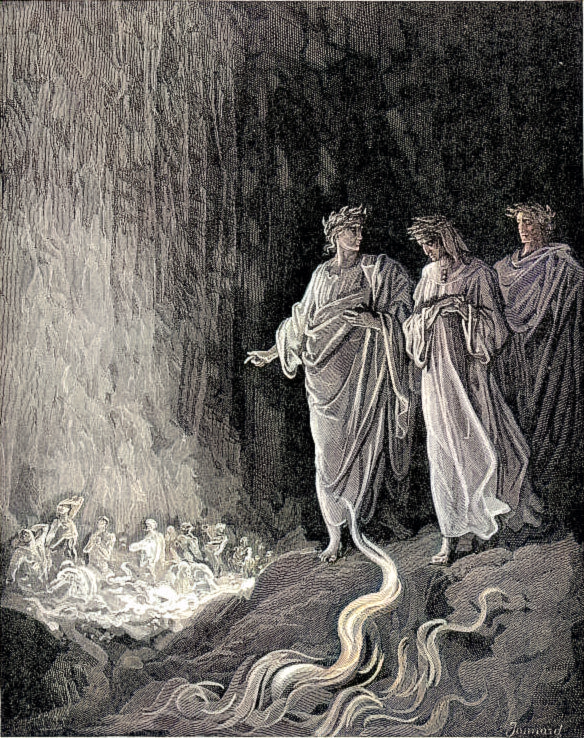
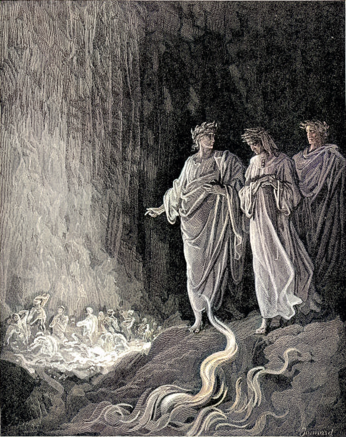

Чистилище
-
 


Из самой глубокой точки ада Данте и Вергилий поднимаются на поверхность и оказываются на противоположной стороне Земли — в Южном полушарии у подножия чистилища. Вход во «второе царство» охраняет античный политик Катон Утический, кумир Данте.
Чистилище — это гора, образованная семью уступами (кругами), на которых души покаявшихся через страдания и молитвы очищаются от семи смертных грехов. Поэтому сначала ангел вывел на лбу Данте семь букв P (от peccato — «грех»), которые другие ангелы стирают по мере восхождения поэта. На вершине же чистилища находится земной рай.
Вергилий излагает учение о любви как об источнике всякого добра и зла и поясняет градацию кругов Чистилища: круги I, II, III — любовь к «чужому злу», то есть зложелательство (гордость, зависть, гнев); круг IV — недостаточная любовь к истинному благу (уныние); круги V, VI, VII — чрезмерная любовь к ложным благам (корыстолюбие, чревоугодие, сладострастие). Круги соответствуют библейским смертным грехам.